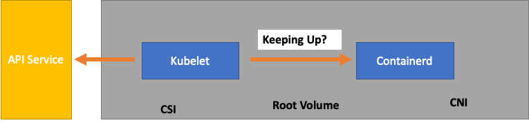
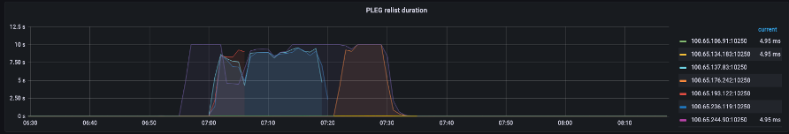
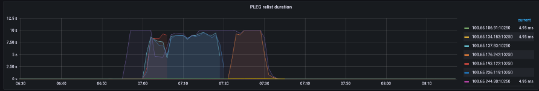

Kubernetes 扩展理论¶
节点与变更率¶
通常在讨论 Kubernetes 的可扩展性时，我们会以单个集群中节点的数量来衡量。有趣的是，这很少是理解可扩展性的最有用指标。例如，一个拥有 5，000 个节点但 Pod 数量较大但固定的集群，在初始设置之后不会给控制平面带来太大压力。但是，如果我们在不到一分钟的时间内尝试在 1，000 个节点的集群中创建 10，000 个短暂的作业，那将给控制平面带来巨大的持续压力。
仅使用节点数量来理解扩展可能会产生误导。最好以特定时间段内发生的变化率(让我们在此讨论中使用 5 分钟的时间间隔，因为这是 Prometheus 查询默认使用的时间间隔)来思考。让我们探讨一下，以变化率的角度来框定问题为什么可以让我们更好地了解需要调整哪些参数才能实现所需的规模。
以每秒查询数思考¶
Kubernetes 为每个组件 - Kubelet、调度器、Kube 控制器管理器和 API 服务器 - 都有一些保护机制，以防止压垮 Kubernetes 链条中的下一个环节。例如，Kubelet 有一个标志可以以一定的速率限制对 API 服务器的调用。这些保护机制通常(但不总是)以每秒允许的查询数或 QPS 来表示。
在更改这些 QPS 设置时必须格外小心。消除一个瓶颈，例如 Kubelet 上的每秒查询数，将会影响下游的其他组件。这可能并且确实会在一定速率以上压垮整个系统，因此了解和监控服务链条的每个部分对于成功扩展 Kubernetes 上的工作负载至关重要。
注意
API 服务器有一个更复杂的系统，引入了 API 优先级和公平性，我们将单独讨论。
注意
当心，有些指标看起来很合适，但实际上在测量其他东西。例如，kubelet_http_inflight_requests 仅与 Kubelet 中的指标服务器有关，而不是 Kubelet 到 apiserver 的请求数量。这可能会导致我们错误地配置 Kubelet 上的 QPS 标志。查询特定 Kubelet 的审计日志会是检查指标的更可靠方式。
扩展分布式组件¶
由于 EKS 是一种托管服务，让我们将 Kubernetes 组件分为两类：AWS 托管的组件，包括 etcd、Kube 控制器管理器和调度器(在图的左侧部分)，以及客户可配置的组件，如 Kubelet、容器运行时和调用 AWS API 的各种操作符，如网络和存储驱动程序(在图的右侧部分)。我们将 API 服务器放在中间，尽管它是由 AWS 管理的，但客户可以配置 API 优先级和公平性的设置。

上游和下游瓶颈¶
在监控每个服务时，查看双向指标以寻找瓶颈非常重要。让我们以 Kubelet 为例，学习如何做到这一点。Kubelet 与 API 服务器和容器运行时进行通信;我们需要监控什么，以检测任何一个组件是否出现问题？
每个节点的 Pod 数量¶
当我们查看扩展数字时，例如一个节点可以运行多少个 Pod，我们可以直接采用上游支持的 110 个 Pod 每节点的数字。
注意
https://kubernetes.io/docs/setup/best-practices/cluster-large/
但是，您的工作负载可能比在上游进行的可扩展性测试中更加复杂。为了确保我们可以在生产环境中运行所需数量的 Pod，让我们确保 Kubelet 能够"跟上"Containerd 运行时的步伐。

过于简单化，Kubelet 正在从容器运行时(在我们的例子中是 Containerd)获取 Pod 的状态。如果 Pod 状态变化的速率过高，那么[对容器运行时的]请求可能会超时。
注意
Kubernetes 在不断发展，这个子系统目前正在进行变化。https://github.com/kubernetes/enhancements/issues/3386
 

在上图中，我们看到一条平坦的线，表示我们刚刚达到了 Pod 生命周期事件生成持续时间指标的超时值。如果您想在自己的集群中查看这一点，可以使用以下 PromQL 语法。
如果我们目睹了这种超时行为，就知道我们已经超出了节点所能承受的限度。在继续之前，我们需要解决导致超时的原因。这可以通过减少每个节点上的 Pod 数量，或者寻找可能导致大量重试(从而影响变更率)的错误来实现。重要的是要记住，指标是了解节点是否能够处理分配的 Pod 的变更率，而不是使用固定数字的最佳方式。
通过指标进行扩展¶
虽然使用指标来优化系统的概念已经存在很长时间，但在人们开始使用 Kubernetes 的过程中，这一点往往被忽视了。我们不再关注特定的数字(例如每个节点 110 个 Pod)，而是将精力集中在寻找可以帮助我们发现系统瓶颈的指标上。了解这些指标的正确阈值可以让我们对系统是否经过了最佳配置有很高的信心。
变更的影响¶
一种可能会让我们陷入困境的常见模式是，专注于看起来可疑的第一个指标或日志错误。当我们之前看到 Kubelet 超时时，我们可以尝试随机做一些事情，比如增加 Kubelet 被允许发送的每秒速率等。但是，在查看我们发现的错误下游的整个情况之前，最好先不要采取任何行动。每次更改都要有目的，并有数据支持。
Kubelet 下游是 Containerd 运行时(Pod 错误)、存储驱动程序(CSI)和网络驱动程序(CNI)等 DaemonSet，它们会调用 EC2 API。

让我们继续之前的示例，即 Kubelet 无法跟上运行时。有许多点可能会导致节点被密集打包到触发错误的程度。

在为我们的工作负载设计正确的节点大小时，这些很容易被忽视的信号可能会给系统带来不必要的压力，从而限制了我们的扩展和性能。
不必要错误的代价¶
Kubernetes 控制器在出现错误条件时擅长重试，但这是有代价的。这些重试可能会增加对 Kube 控制器管理器等组件的压力。在扩展测试中监控此类错误是一个重要原则。
当出现较少错误时，更容易发现系统中的问题。通过在重大操作(如升级)之前定期确保我们的集群没有错误，我们可以简化在发生意外事件时对日志的故障排查。
扩展我们的视野¶
在拥有数千个节点的大规模集群中，我们不希望逐个查找瓶颈。在 PromQL 中，我们可以使用名为 topk 的函数在数据集中找到最高值;K 是我们放置要获取项目数量的变量。在这里，我们使用三个节点来了解集群中所有 Kubelet 是否都已饱和。到目前为止，我们一直在查看延迟，现在让我们看看 Kubelet 是否正在丢弃事件。
分解这个语句。
- 我们使用 Grafana 变量
$__rate_interval来确保它获得所需的四个样本。这绕过了监控中一个复杂的主题，使用了一个简单的变量。 topk给出了前几个结果，数字 3 将这些结果限制为三个。对于集群范围的指标，这是一个有用的函数。{}告诉我们没有过滤器，通常您会在其中放置抓取规则的作业名称，但由于这些名称会有所不同，我们将其留空。
将问题一分为二¶
要解决系统中的瓶颈，我们将采用寻找一个指标来显示上游或下游是否存在问题的方法，因为这样可以将问题一分为二。这也将成为我们显示指标数据的核心原则之一。
开始这个过程的一个好地方是 API 服务器，因为它可以让我们看到客户端应用程序或控制平面是否存在问题。